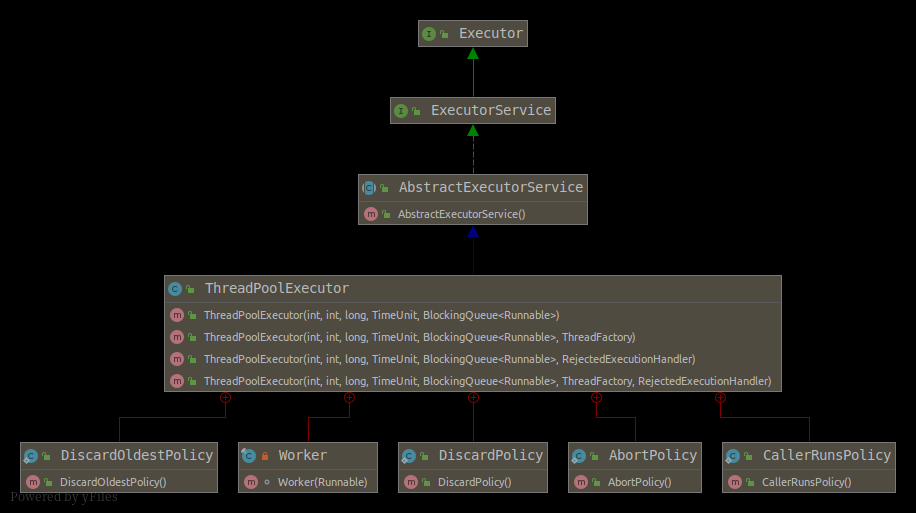

【Java】JUC - ThreadPoolExecutor
JUC - ThreadPoolExecutor

创建一个ThreadPoolExecutor
|
|
参数限制
- 满足以下条件之一则抛出IllegalArgumentException
- corePoolSize < 0
- keepAliveTime < 0
- maximumPoolSize <= 0
- maximumPoolSize < corePoolSize
- 抛出NullPointerException
- threadFactory == null
- handler == null
参数补充说明
- corePoolSize : 如果当前线程总数小于
corePoolSize，则新建的是核心线程，如果超过corePoolSize，则新建的是非核心线程 - keepAliveTime : 指该线程池中非核心线程闲置超时时长, 超过这个参数所设定的时长，就会被销毁掉, 如果设置
allowCoreThreadTimeOut = true，则会作用于核心线程 - unit : TimeUnit时间
- maximumPoolSize : 线程总数 = 核心线程数 + 非核心线程数
- workQueue : 当核心线程都在工作时,新添加的任务会被添加到这个队列中等待处理，如果队列满了，则新建非核心线程执行任务
- ArrayBlockingQueue : 构造函数一定要传大小
- LinkedBlockingQueue : 构造函数不传大小会默认为
Integer.MAX_VALUE，当大量请求任务时，容易造成内存耗尽.由于这个队列没有最大值限制，即所有超过核心线程数的任务都将被添加到队列中，这也就导致了maximumPoolSize的设定失效，因为总线程数永远不会超过corePoolSize - SynchronousQueue : 同步队列，一个没有存储空间的阻塞队列 ，将任务同步交付给工作线程.此队列通常要求无界 maximumPoolSizes 以避免拒绝新提交的任务
- PriorityBlockingQueue : 优先队列
- DelayQueue : 传进去的任务必须先实现Delayed接口。这个队列接收到任务时，首先先入队，只有达到了指定的延时时间，才会执行任务
- threadFactory : 线程工厂(默认值
Executors.defaultThreadFactory()) - handler : 拒绝策略
- AbortPolicy(默认) : 直接抛弃
- CallerRunsPolicy : 拒绝这个任务，不在ThreadPoolExecutor线程池中的线程中运行，而是调用当前线程池的所在的线程去执行被拒绝的任务
- DiscardOldestPolicy : 抛弃队列中最久的任务（最先加入队列的任务）,再把这个新任务添加到队列中去。
- DiscardPolicy : 线程池默默丢弃这个被拒绝的任务，不会抛出异常。
执行过程
- 1.当线程池小于corePoolSize时，新提交任务将创建一个新线程执行任务，即使此时线程池中存在空闲线程。
- 2.当线程池达到corePoolSize时，新提交任务将被放入workQueue中，等待线程池中任务调度执行
- 3.当workQueue已满，且maximumPoolSize>corePoolSize时，新提交任务会创建新线程执行任务
- 4.当提交任务数超过maximumPoolSize时，新提交任务由RejectedExecutionHandler处理
- 5.当线程池中超过corePoolSize线程，空闲时间达到keepAliveTime时，关闭空闲线程
- 6.当设置allowCoreThreadTimeOut(true)时，线程池中corePoolSize线程空闲时间达到keepAliveTime也将关闭
Executors中常见的ThreadPoolExecutor
- 单个线程池: Executors.newSingleThreadExecutor() || Executors.newSingleThreadExecutor(ThreadFactory threadFactory)
- new ThreadPoolExecutor(1, 1,
0L, TimeUnit.MILLISECONDS, new LinkedBlockingQueue<Runnable>()) - new ThreadPoolExecutor(1, 1,
0L, TimeUnit.MILLISECONDS, new LinkedBlockingQueue<Runnable>(), threadFactory) - 创建单个线程
- new ThreadPoolExecutor(1, 1,
- 固定线程池: Executors.newFixedThreadPool(int nThreads) || Executors.newFixedThreadPool(int nThreads, ThreadFactory threadFactory)
- new ThreadPoolExecutor(nThreads, nThreads,
0L, TimeUnit.MILLISECONDS, new LinkedBlockingQueue<Runnable>()) - new ThreadPoolExecutor(nThreads, nThreads,
0L, TimeUnit.MILLISECONDS, new LinkedBlockingQueue<Runnable>(), threadFactory); - 核心线程和最大线程相同,并且不过期
- new ThreadPoolExecutor(nThreads, nThreads,
- 缓存线程池: Executors.newCachedThreadPool() || Executors.newCachedThreadPool(ThreadFactory threadFactory)
- new ThreadPoolExecutor(0, Integer.MAX_VALUE,
60L, TimeUnit.SECONDS, new SynchronousQueue<Runnable>()) - new ThreadPoolExecutor(0, Integer.MAX_VALUE,
60L, TimeUnit.SECONDS, new SynchronousQueue<Runnable>(), threadFactory) - 核心线程为0,并且阻塞队列为SynchronousQueue,按需创建线程,默认过期时间60s
- new ThreadPoolExecutor(0, Integer.MAX_VALUE,
- 调度线程池: Executors.newScheduledThreadPool(int corePoolSize) || Executors.newScheduledThreadPool(int corePoolSize, ThreadFactory threadFactory)
- new ThreadPoolExecutor(corePoolSize, Integer.MAX_VALUE,
0, TimeUnit.NANOSECONDS, new DelayedWorkQueue()) - new ThreadPoolExecutor(corePoolSize, Integer.MAX_VALUE,
0, TimeUnit.NANOSECONDS, new DelayedWorkQueue(), threadFactory) - 可以调度命令以在给定延迟后运行或定期执行
- new ThreadPoolExecutor(corePoolSize, Integer.MAX_VALUE,
- 窃取线程池: Executors.newWorkStealingPool() || Executors.newWorkStealingPool(int parallelism)
- new ForkJoinPool
(Runtime.getRuntime().availableProcessors(), ForkJoinPool.defaultForkJoinWorkerThreadFactory, null, true); - new ForkJoinPool
(parallelism, ForkJoinPool.defaultForkJoinWorkerThreadFactory, null, true) - 窃取线程是ForkJoinPool的拓展(分治算法),创建一个拥有多个任务队列的线程池，可以减少连接数，创建当前可用cpu数量的线程来并行执行,适合很耗时间的任务
- new ForkJoinPool